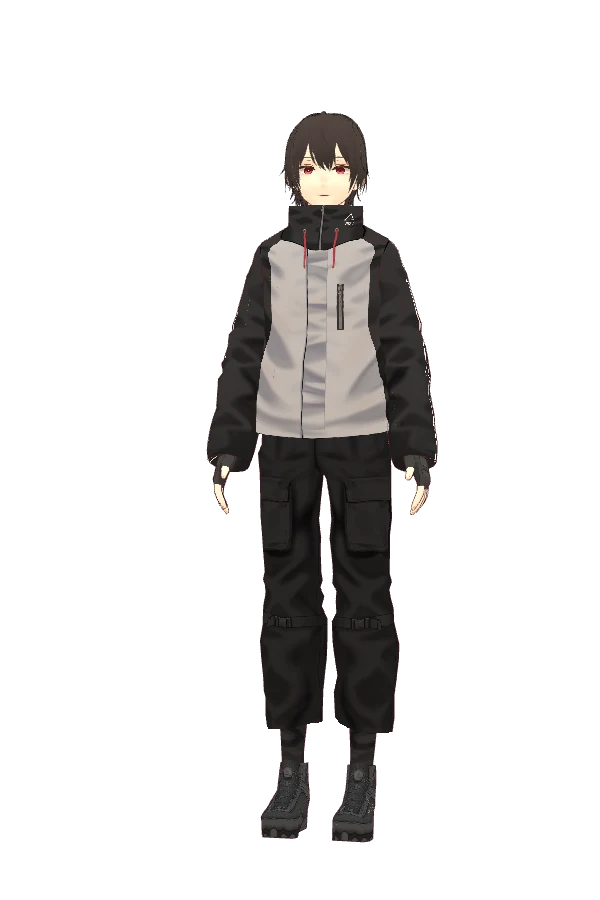
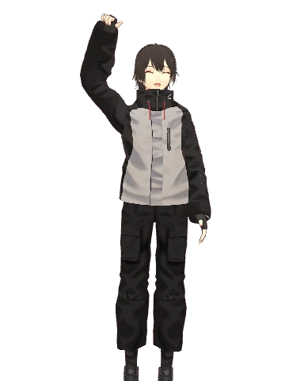
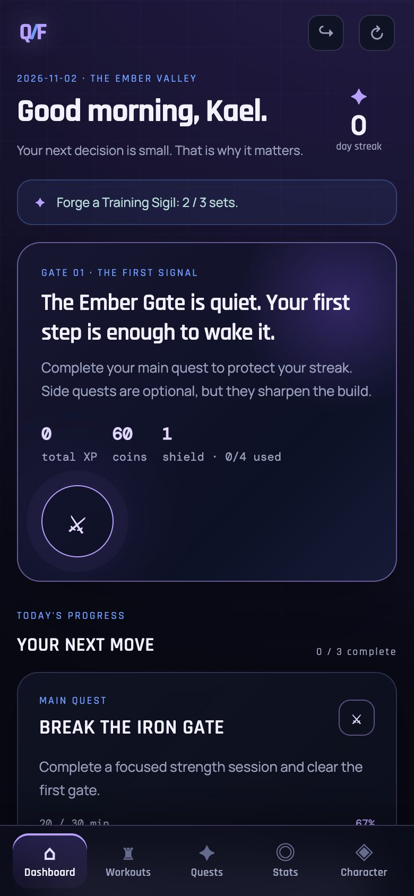
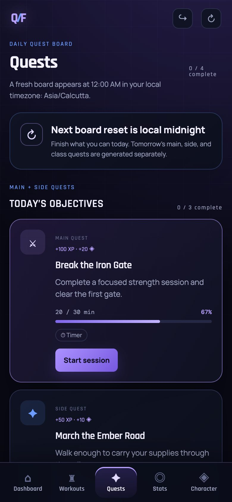
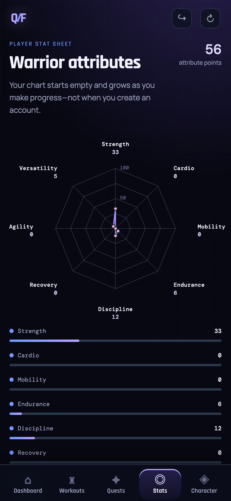

Main quest · protects your streak
Break the Iron Gate
Complete a focused strength session and clear the first gate.
+100 XP · +20 coins
Demo campaign · scroll to train
Day 1 · Warrior · demo campaign
QuestFit turns real workouts into an RPG campaign on Android. This page is a demo: scroll to train.
Start your campaignMain quest · protects your streak
Complete a focused strength session and clear the first gate.
+100 XP · +20 coins
Your class decides your daily board. Tap one and the board you just cleared changes with it.
The hardest path ranks slowest. Your class is matched to your fitness level when you start.
Skip your main quest, or skip the app for a day, and it counts as missed. You set the stakes, and you can change them anytime.
Pick your stakes, then try missing a day.
Always virtual: never real money, never public. A shield absorbs your first miss, and two rest days and two sick days a month protect your streak.
Every screen here is a few days of full boards. Eight stats grow from what you actually log, and the log below is your campaign so far.
Demo values: a full board every day for your class.
Level 15.
3,740 / 3,750 XP. One side quest left.

Level 16
“Level 16! You're not the person who started.”
“That's how it's done. Proud of you.”

Proud16 and upThe real screens, and thirty seconds of a real day. Your campaign and your health data stay on your phone: no accounts, no server.
This is QuestFit itself, running in your browser with a demo hero. Open the quest board, start a session, log a set, switch your stakes. Your progress stays in this browser.
The browser version can't read Health Connect, so steps and watch workouts only verify in the Android app.




No. Your phone counts your steps, and the in-app timer completes any main quest. A watch workout with heart rate, synced through Health Connect, counts as proof too.
On your phone. QuestFit has no accounts and doesn't send your campaign or your health data to a server. Read the privacy policy.
Use a rest day or a sick day. You get two of each every month, and they protect your streak with no penalty.
No. QuestFit is Android only, downloaded straight from this page.
No. Workout suggestions are general guidance. Check with a doctor before starting a new training plan.
Not in the app yet.